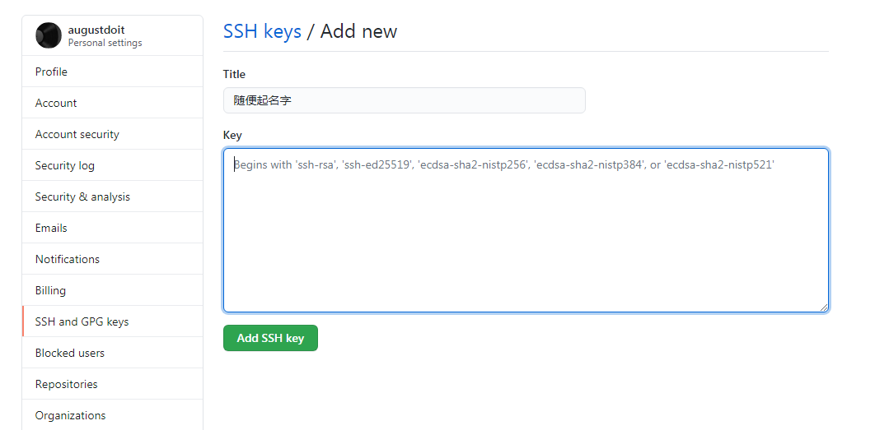
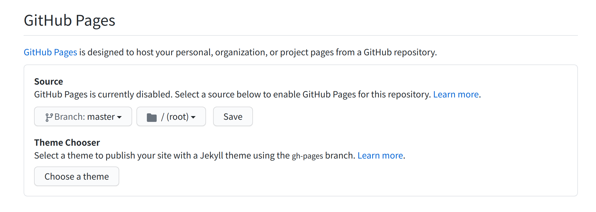
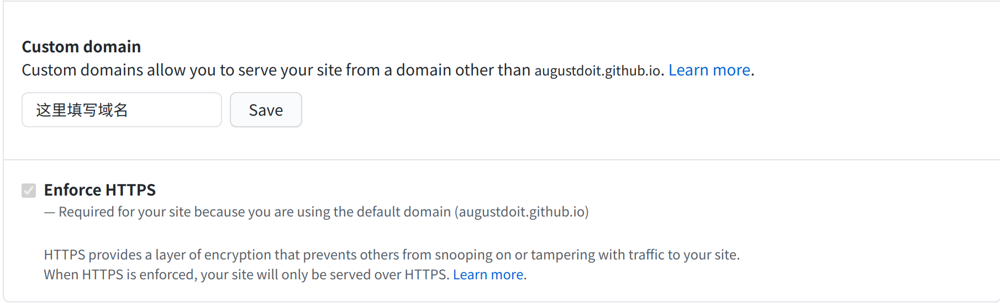
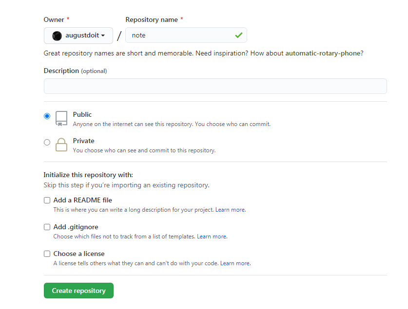
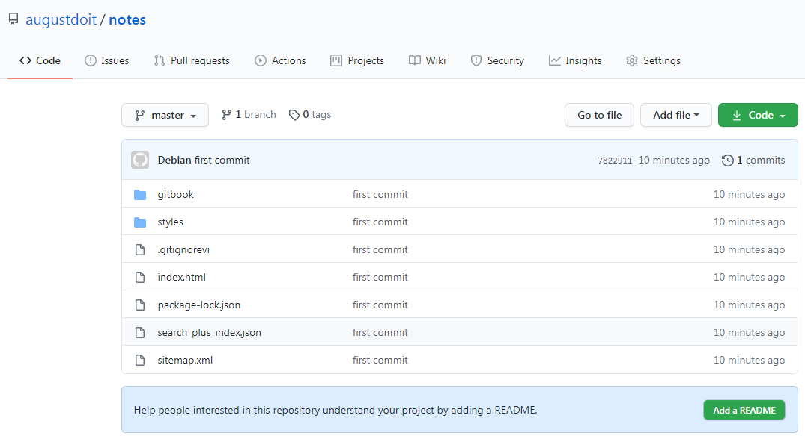

2.7.1. 托管
编译完成后生成的静态页面，可托管的地方很多，这里只说与 Github 相关的。
2.7.1.1. 前期准备
Git 会单开一章总结。
2.7.1.1.1. 配置SSH key
本地生成
cd
ssh-keygen -t rsa -b 4096 -C "augustdoit@gmail.com"
# 输出
Generating public/private rsa key pair.
Enter a file in which to save the key (用户目录/.ssh/id_rsa): //默认目录，回车就好
Enter passphrase (empty for no passphrase): //设置密码，直接回车意味着不设密码
Enter same passphrase again: //再次输入密码
添加到 Github
复制公钥内容
cat ~/.ssh/id_rsa.pub
将输出内容复制 登录到Github网站，右上角Seetings-SSH and GPG keys-New SSH key

Tittle //随便起个名字
Key //粘贴复制的内容
Add SSH key
测试
ssh -T git@github.com
设置用户信息
git config --global user.name "augustdoit" //用户名
git config --global user.email "augustdoit@gmail.com" //邮箱
2.7.1.2. 托管到 Gitbook.com
待编辑
2.7.1.3. 托管到 Github
本节及下节托管到 Github Pages 的需求情景实际上是git的应用，即将书籍的源码存放到仓库的 master 分支，而将书籍的 html 版本存放到仓库的 pages 分支。
这节指的是书籍源码，不含gitbook build生成内容。
2.7.1.3.1. 创建仓库
在 GitBook 项目目录，如 book 中，执行如下命令，创建本地 git 仓库
git init
2.7.1.3.2. 添加忽略文件
vi .gitignore
# 添加如下内容
*~
_book
.DS_Store
通过.gitignore文件，本地仓库将忽略临时文件和_book文件夹，达到只保存书籍源码的目的。
2.7.1.3.3. 添加文件
将本地源码添加到本地仓库
git add .
2.7.1.3.4. 添加更新说明
git commit -m '更新说明文字'
2.7.1.3.5. 建立本地仓库与远端仓库的对应关系
git remote add origin https://远程仓库地址.git
2.7.1.3.6. 推送
将本地仓库内容同步到远端仓库：
git push -u origin master
至此，就完成了将gitbook源码推送到远程仓库的任务，之后书籍内容修改后，执行如下操作即可：
git add .
git commit -m '更新说明文字'
git push -u origin master
2.7.1.4. 托管到 Github Pages
pages 是 github 类网站提供的免费的静态网页托管服务，既然 GitBook 能生成基于 HTTML 的静态电子书籍，那自然而然，我们就会有将 GitBook 静态页面发布到 pages 服务的需求。
2.7.1.4.1. 新建分支
git checkout --orphan pages
2.7.1.4.2. 删除不需要的文件
切换到 pages 分支后，我们需要将 _books 目录之外的文件都清理掉：
git rm --cached -r .
git clean -df
rm -rf *~
2.7.1.4.3. 添加忽略文件
*~
_book
.DS_Store
通过.gitignore文件，本地仓库将忽略临时文件和 _book 文件夹.
2.7.1.4.4. 复制_book文件夹到分支根目录
cp -r _book/* .
2.7.1.4.5. 添加文件
git add .
2.7.1.4.6. 添加更新说明
git commit -m '更新说明'
2.7.1.4.7. 推送
git push -u origin pages
2.7.1.4.8. 开启pages服务
登陆github网站，仓库设置开启 pages 服务，也可以添加域名.
开启 Pages

添加域名

2.7.1.5. 自动化脚本
命令行的精髓在于可以自动执行，如下面的脚本，可以完成同时更新 master 分支和 pages 分支的目的。
git checkout master
git add .
git commit -m $1
git push -u origin master
git checkout pages
cp -r _book/* .
git add .
git commit -m $1
git push -u origin pages
git checkout master
在需要更新的时候，执行如下命令：
sh gitbook.sh '更新说明'
2.7.1.6. 个人方案-只托管网页
本人没有将源码托管在 Github 上，只将静态网页托管,仓库名 notes ,分支 master 。
2.7.1.6.1. github上创建仓库

2.7.1.6.2. 本地推送
本地生成CNAME文件，防止远程每次推送被删除，注意在_book同级目录
vi CNAME
# 填写你的域名
notes.augustdoit.men
本地推送
cd _book
git init
vi .gitignore
# 添加如下
*~
.DS_Store
# 保存后退出
git add .
git commit -m "first commit"
git branch -M master
git remote add origin git@github.com:augustdoit/notes.git
git push -u origin master
回到 github 网页

2.7.1.6.3. 开启pages服务
2.7.1.6.4. 自动化脚本
cd _book
git checkout master
git add .
git commit -am $1
git push git@github.com:augustdoit/notes.git master --force